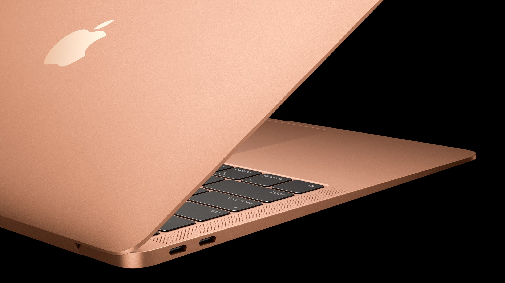

The MacBook Pro is a line of Macintosh portable computers introduced in January 2006 by Apple Inc. It is the higher-end model of the MacBook family, sitting above the consumer-focused MacBook Air. There is Four generations of the MacBook Pro.Apple introduced a new M1 MacBook Pro in November of 2020, but the new model didn't include any design changes. That's going to change in 2021, with rumors suggesting Apple has a major MacBook Pro design refresh in the works.
MacBook Air

The MacBook Air is a line of laptop computers developed and manufactured by Apple Inc. It consists of a full-size keyboard, a machined aluminum case, and, in the more modern versions, a thin light structure.
The MacBook Air was introduced in January 2008 with a 13.3-inch screen, and was promoted as the world's thinnest notebook, opening a laptop category known as the ultrabook family. Apple released a second generation MacBook Air in October 2010, with a redesigned tapered chassis, standard solid-state storage, and added a smaller 11.6-inch version. Later revisions added Intel Core i5 or i7 processors and Thunderbolt. The third generation was released in October 2018, with reduced dimensions, a and combination USB-C/Thunderbolt 3 ports for data and power. An updated model was released in February 2020 with the Magic Keyboard and an option for an Intel Core i7 processor. A third generation model update, based on Apple silicon processors, was introduced in November 2020.